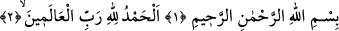

Fâtiha’ya “Seb’u’l-Mesânî” de denilmiştir. Bunun sebebleri ise şöyle sıralanabilir:
1. Fâtiha yedi âyettir. Bu âyetlerin her biri Kur’ân’ın yedide biri yerine kaimdir. Bu
yüzden Fâtiha’yı okuyan kimse, Kur’ân’ın tamamını okumuş gibi ecir ve sevap kazanır.
2. Fâtiha Sûresi’nin yedi âyetini okumak üzere ağzını açan kimseye, cehennemin yedi
kapısı kapanır.
Bu iki sebeb, Fâtiha’ya seb’ (yedi) denilmesinin sebebidir.
Mesânî denilmesinin sebebleri ise:
a. Her namazda en az iki kere okunması,
b. Her rekâtta kendisine fiilen veya hükmen bir başka sûrenin eşlik etmesi,
c. Mekke’de ve Medine’de olmak üzere iki defa nâzil olması.
Bu sûreye ayrıca “Salât, Şifâ, Şâfiye, Esâsü’l-Kur’ân, Kâfiye, Vâfiye, Hamd, Sual,
Şükür ve Duâ” gibi isimler de verilmiştir. Çünkü bu sûrede, bu adları almayı
gerektirecek bütün özellikler vardır.
Fâtiha’nın bir adı da “Sûretü’l-Kenz”dir. Nitekim bir kudsî hadiste Allah Teâlâ
hazretleri: “Fâtiha Benim Arş hazînelerimden bir hazînedir.”[144] buyurmuştur.
1-2. Rahmân ve Rahîm olan Allah’ın adıyla. Hamd âlemlerin Rabbına mahsûstur.
Bu âyetteki “el-Hamd” kelimesinin başındaki harf-i ta’rîf, yâni “el” takısı hamdin
kemâlini gösterir; yâni hamdin en mükemmeli demektir. O da: “Allah’ın hamdi Allah
içindir, peygamberlerin, velâyet makamına ermiş kâmillerin hamdi de Allah içindir”
demektir. Ya da hamd ve senâ; ister bizâtihî (ayn olarak) isterse melek, beşer ve diğer
varlıklardan sâdır olan ârızî şekliyle olsun, aslında mahmûd, adlinde memdûh ve gerçek
ma’bûd olan Allah içindir. Nitekim Allah Teâlâ: “Hiçbir şey yoktur ki, Allah’ı hamdi
ile tesbih etmiş olmasın.” (el-İsrâ, 17/44) buyurur.
Sûfîlere göre hamd; övgüye lâyık bulunan Allah Teâlâ’nın kemâlini ortaya koymaktır.
O’nun kemâli sıfat, fiil ve eserlerinde zâhir olur. Dâvud Kayserî der ki: “Hamd; söz,
fiil ve hâl ile olur.”
Söz ile olan hamd, dil ile yapılan övgüdür. Hak Teâlâ’yı, peygamberlerinin lisânıyla
veya kendini övdüğü şekilde senâ etmektir.
Fiilî hamd, Allah’ın rızâsını umarak ve O’nun yüce katına yönelerek ibâdet ve hayır
türünden bedenî amelleri yerine getirmektir. Çünkü insanın diliyle hamdetmesi,
organlarıyla da gerektiği gibi şükretmesi ve her hal ü kârda müteşekkir bulunması
gerekmektedir. Nitekim Allah Rasûlü (s.a): “Hamd, her hal ü kârda Allah’a
mahsustur”[145] buyurur. Bu da ancak her organın yaradılış sırrına uygun bir biçimde